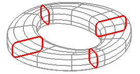

通过曲线组输出曲面选项
补片类型选项可以控制 V 向(垂直于截面线串)的补片将是单个还是多个。如果选择“单个”，则 V 向的阶次将由线串数确定，阶次比选择的曲线组数小一。
V 向封闭允许您在第一个和最后一个截面曲线之间创建一个封闭的特征。对于多个补片来说，体沿行方向(U 向)的封闭状态取决于截面线串的封闭状态。如果您选择的线串全部封闭，则生成的体将在 U 向上封闭。当选中 V 向封闭  复选框时，片体沿列(V 向)方向封闭。如果截面线串处于封闭状态并且该选项启用时，并且体类型设置为实体，则NX 将创建一个实体。
复选框时，片体沿列(V 向)方向封闭。如果截面线串处于封闭状态并且该选项启用时，并且体类型设置为实体，则NX 将创建一个实体。

垂直于终止截面复选框将使起始和结束体垂直于起始和结束截面曲线。